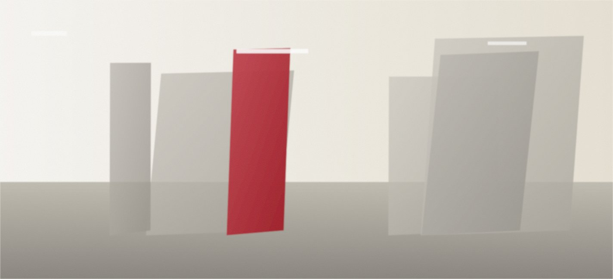
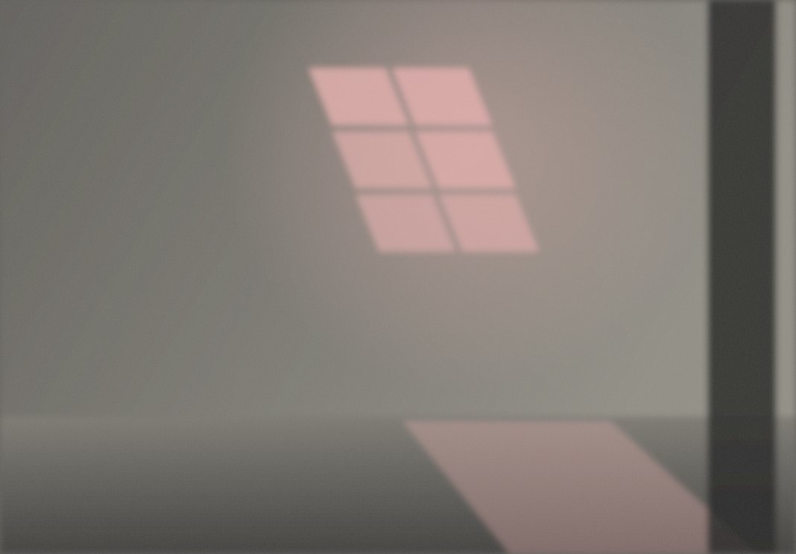
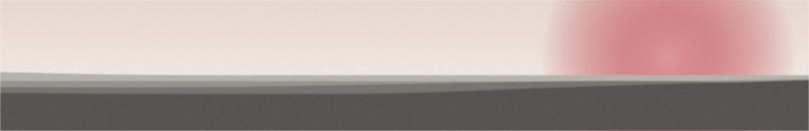

第 01 版 · 2026 年 10 月
风格 D · 报刊版面

图 01 · 示意图
网页 PPT · 可编辑导出
HTML 是唯一的源，PPTX、PDF 与 PNG 是一键衍生物。先选风格再填内容，浏览器排好后再逐个测量位置、尺寸、字号与颜色，按同样坐标写进原生可编辑文档，十六条规则把关交付。
本期导览
风格库十二种独立版式 · 测量与原生导出 · 十六条质量门规则 · 四步工作流。
ZIFEIYU PPT SKILL · 报刊 · 版面
01 / 17
第 02 版 · 目录
ZIFEIYU PPT SKILL
全刊四辑十七版 · 内容总览
版面导读

图 02 · 示意图
全刊分为风格库、测量与导出、质量门与工作流四辑，各版均按角色登记并通过校验。
01
十二种风格，开场先挑一种
第 04 版
02
先量后画，文字始终可编辑
第 07 版
03
十六条规则，错误清零才交付
第 10 版
04
从大纲到成稿的四步
第 13 版
ZIFEIYU PPT SKILL · 目录
02 / 17
第 03 版 · 社论
设计原则
社论 · 核心主张
— SKILL.md · 设计原则
浏览器排布即终稿坐标，导出器逐项测量，交付可编辑 PPTX、矢量 PDF 与逐页 PNG。
ZIFEIYU PPT SKILL · 社论
03 / 17
第 04 版 · 篇章
第一辑
第一辑 · 篇章
01
十二种风格各有一套独立版式，按页面角色统一登记。先按场合选风格，再依内容形状落版面。
01
风格库
第 04 版
02
测量与导出
第 07 版
03
质量门
第 10 版
04
工作流
第 13 版
ZIFEIYU PPT SKILL · 第一辑
04 / 17
第 05 版 · 风格库
风格索引
分五组：编辑排印、商务理性、舞台冲击、影像叙事、东方人文
收录总数
12
覆盖编辑排印、商务理性、舞台冲击、影像叙事、东方人文五大谱系，每种均具独立版式。
A
编辑排印
B
商务理性
C
舞台冲击
D
编辑排印
E
舞台冲击
F
商务理性
G
影像叙事
H
商务理性
I
东方人文
J
影像叙事
K
东方人文
L
商务理性
来源：docs/superpowers/specs/2026-10-08-style-library-design.md §2
05 / 17
第 06 版 · 风格库
架构对照
之前 · 旧架构
现在 · 风格库
三套设计系统共用 L01–L24，换一个主题文件整套换色，版面结构始终一样。
24
个版式，三套系统共用
结构同构，仅靠配色与字体区分
十二种风格各有一套版式，按角色登记；校验与导出只认角色，不认风格。
12
种风格，各有一套版式
角色层解耦，每种风格各自成篇
来源：references/layouts.md（L01–L24）· 风格库 spec §1、§3.2
06 / 17
第 07 版 · 测量与导出
深度报道
图 03 · 示意图 — 浏览器排布与原生导出坐标映射
测量与原生映射
导出器先让浏览器把每一页排好，再逐个量出元素的位置、尺寸、字号与颜色，按同样的坐标写进 PPTX。
圆角、描边、阴影、旋转与竖排换成 PowerPoint 原生形状；画不出的装饰单独截图，文字始终可编辑。
导出原语
圆角矩形 · 直线 · 燕尾 · 旋转 · 阴影 · 竖排。所有文字均保留为原生可编辑文本框。
来源：scripts/export-pptx.mjs、scripts/lib/snapshot.mjs
07 / 17
影像专题 · 第 08 版
风格决定版面，版面决定一页能放多少字。
图 04 · 示意图
出处：SKILL.md 第 1 步 Q2（选风格在填内容之前）
ZIFEIYU PPT SKILL · 影像专题
08 / 17
第 09 版 · 测量与导出
三栏评述
要点 壹
01
方向键翻页，F 全屏，S 打开演讲者控制台，讲稿只给自己看。
F 全屏 · S 演讲者控制台
要点 贰
02
文字是原生文本框，形状是原生形状，交给同事也能接着改。
原生文本框 · 原生形状
要点 叁
03
十六条规则查版式、字号、出处与导出一致性，错误清零才交付。
R1–R16 · 错误清零
来源：SKILL.md 第 6、8 步
09 / 17
质量门 · 第 10 版
据本仓库校验与角色定义
校验规则、页面角色与导出格式三项指标，均来自本仓库校验器与角色注册表。
校验规则（条）
16
R1–R16，从版式注册一路查到 PPTX 导出一致性。
页面角色
20
其中 12 个是每种风格必须覆盖的核心角色。
导出格式
3
PPTX · PDF · PNG，HTML 是唯一的源。
来源：scripts/validate.mjs · scripts/lib/roles.mjs
10 / 17
第 11 版 · 质量门
统计图表
图表 · 各类校验规则条数分布（单位：条）
对应规则编号
4
R3 · R4 · R7 · R9
4
R1 · R2 · R6 · R12
3
R5 · R8 · R14
3
R10 · R11 · R13
1
R15
1
R16
共 16 条 · 错误清零方可交付
来源：scripts/validate.mjs 规则注释（R1–R16），按守护对象分组
11 / 17
第 12 版 · 质量门
规格台账
项目
规格
出处
1280 × 720 px，导出时 px × 0.75 换算为 pt
assets/base.css
16 px，溢出先删字、再换版式
validate.mjs · R4
R1–R16，错误清零才能交付
validate.mjs
PPTX · PDF · PNG，HTML 是唯一的源
SKILL.md
20 个，其中 12 个核心角色
lib/roles.mjs
SIL OFL 开源字体，按 deck 用字子集化
fetch-fonts.mjs
来源：表内「出处」列（本仓库文件）
12 / 17
工作流 · 第 13 版
四步成稿
先选风格，再写内容：风格决定版面，版面决定一页能放多少字。按四步走完，一次交付。

壹
看风格画廊，按场合挑一种，整份 deck 只用这一种。
贰
按内容形状找角色，复制版式骨架，只换文字和图片。
叁
查类名、字号、出处与导出一致性，错误必须清零。
肆
一键得到可编辑 PPTX、矢量 PDF 与逐页 PNG。
图 05 · 示意图 · 来源：SKILL.md 工作流
13 / 17
第 14 版 · 工作流
版本编年
2026 年核心版本演进纪要（07.16 → 10.08）
2026 · 01
07.16
锁定设计系统的网页 PPT，确定性导出。
2026 · 02
07.18
第二套设计系统：思源宋、暖纸、朱砂。
2026 · 03
08.17
规则覆盖全部元素，文字分段原生导出。
2026 · 04
08.18
第三套设计系统，加入数据叙事版式。
最新里程碑
10.08
十二种风格，版式独立。
来源：git log（2026-07-16 → 2026-10-08）
14 / 17
第 15 版 · 工作流
闭环机制
01
02
03
04
4
个步骤 · 一圈
修订与基线回路
01
调整版式结构与几何参数
02
十六条机器规则错误清零
03
逐页出图并与基线目检比对
04
归档通过检验的黄金参考帧
→ 回到 01 改版式
来源：scripts/baseline.mjs（基线前先过 check-style 与 validate）
15 / 17
第 16 版 · 工作流
样式体系
base.css
style.css
brand.css
外层 · 公共底座
画布、元素契约、形状原语
中层 · 风格包
风格的 token、字体与全部版式
内层 · 品牌覆写
只改 token 的品牌色
来源：风格库 spec §3.1
16 / 17
第 17 版 · 封底
ZIFEIYU PPT SKILL
下一步 · 即刻发刊
新建 DECK 命令
node scripts/new-deck.mjs my-deck --style broadsheet
风格画廊：docs/styles/index.html
一源三出 · 浏览器演示 · PPTX · PDF · PNG
刊物档案
风格代号：D · 报刊 · 版面
推荐场合：工作汇报 · 机构材料 · 高密度内容
字体：思源宋 · 思源黑 · JetBrains Mono
ZIFEIYU PPT SKILL · 风格 D 报刊 · 版面
17 / 17